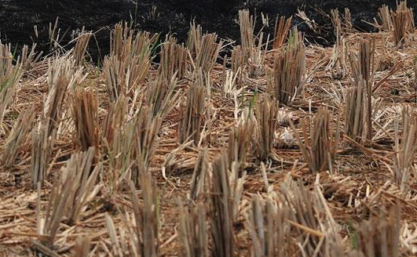

</img>

<div class="mscroll-container mscroll-y mscroll-loop scrollable">
	<div class="mscroll-area">
		<div class="mscroll-group">
			<div class="mscroll-item">
				<article>
					<!-- <h2>Hello, I'm Adrien.</h2> -->
					<p>Hello, I'm Adrien.<br><br>I'm a 26 year old all terrain designer that has mostly been working in the field of digital experiences and performances.<br><br>
					In 2013 I graduated with an M.A. from the <a href="http://ecole-boulle.org/" target="blank">École Boulle</a>, Paris. Following to that I went to work at <a href="http://uva.co.uk/" target="blank">United Visual Artists</a>, London. I became a freelancer around the end of the year 2015.<br><br>
					For a more complete overview of my experience, <a href="https://drive.google.com/open?id=0B_6HiLPjcEgxM2luc1A5WVlEZFU" target="blank">click here</a>.
					You can offer me a job or ask me about this background <a href="mailto:adrienbihorel@gmail.com?subject=This%20background">over there</a>.</p>
				</article>
			</div>
		</div>
	</div>
</div>
